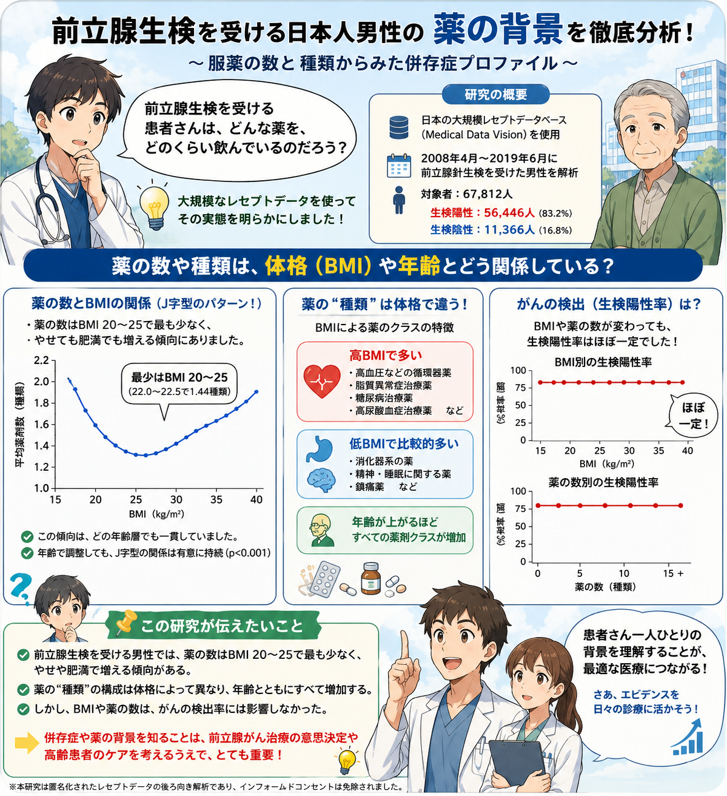

前立腺がんは高齢者に多く、治療法を選ぶ際には、がんそのものだけでなく患者さんの全身状態や併存疾患を理解することが欠かせません。しかし、前立腺生検を受ける患者さんが普段どのような薬を服用しているのか、その実態はほとんど明らかになっていませんでした。本研究では約6万8千人の日本人患者を対象に、服薬数と薬剤の種類を解析し、BMIや年齢との関係を調べました。その結果、BMIによって服薬の特徴は大きく異なる一方、薬の数やBMIはがんの検出率には影響しないことが分かりました。患者さんが「どんな薬を飲んでいるか」は、病気だけでなく生活背景やフレイル、併存疾患を映し出す重要な情報です。本研究は、前立腺がん診療において患者さん全体を理解し、より適切な治療選択や高齢者医療につなげるための新たな視点を示した研究です。